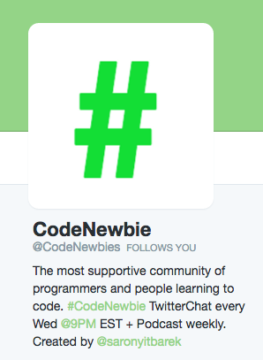

So this is why I love Code Newbies
5/19/2016
Hi! I'm Rebecca and I've been teaching myself how to code for about a year, previously having no background in tech. (Didn't know how the Internet worked at all!!) To admit, I get caught up researching and one article leading to another, and probably spend more time researching resources than actually learning to code! Procastiworking is what I've sometimes heard it called!
Yesterday I had a particularly special and supportive exchange with one of my favorite online resources, and decided that I should be sharing what I learn! One thing that I've found is an incredibly supportive community on Twitter called Code Newbies, founded by Saron Yitbarek (back to this in a second).
Early on in my research, I discovered how important and useful it is to have a presence on Twitter in the tech world. Not too long after, I discovered this great community. At first, I surely did not understand how Twitter worked. I felt like an old lady, but Twitter is amazingly complex, and there is much more than meets the eye!
Mom this is how Twitter Works is a totally great site by Jessica Hische. Start here if you don't understand Twitter. Also Google her talks, she is inspiring and a hoot!
Anyway, with your new Twitter skills under your belt, you'll be eager to join the Code Newbies community!! Anytime someone posts a tweet containing "#codenewbie", it will show up if you put in the search bar "#codenewbie".
Many people do this when they have a resource to share, general encouragement, and other relevant things. If you add @Codenewbies to your tweet, it goes to the moderator, who sometimes retweets it, and you get feedback and likes! Exciting all around!!
Here's my tweet and some of the responses from yesterday that inspired my intro into blog-writing! Carlos Lazo is a veteran coder who was the featured guest on the first Code Newbies podcast, and jumped in to answer my questions and be generally helpful! (Read top to bottom, left to right.)
I'm getting frustrated in my studying and nervous about finding a job in front end dev. Anyone else feel this? 😳@CodeNewbies #codenewbie
— Rebecca Snyder (@snyderrc) May 14, 2016
@snyderrc I think it was in the very first @CodeNewbies podcast that the guest said being a developer is getting paid to feel frustrated
— India (@indiamos) May 14, 2016
@indiamos @snyderrc it was! That was @CarlosPlusPlus! :)
— CodeNewbie (@CodeNewbies) May 14, 2016
Thanks for the ping @CodeNewbies - after many yrs of being a Dev, I STILL feel this way. Here to help @snyderrc if you have any ?s! :)
— Carlos Lazo (@CarlosPlusPlus) May 14, 2016
@CarlosPlusPlus @CodeNewbies Thanks! I have ALL the questions!Moving to Phx in ~6 months & don't know how to tell when my skills are ready..
— Rebecca Snyder (@snyderrc) May 14, 2016
@CarlosPlusPlus @CodeNewbies ..to be able to get a jr front end dev job when I get there
— Rebecca Snyder (@snyderrc) May 14, 2016
.@snyderrc Frustration is a part of being a Dev. Why can’t I learn fast enough? Will it be good enough? So much self doubt. @CodeNewbies
— Carlos Lazo (@CarlosPlusPlus) May 14, 2016
.@snyderrc But you need to believe in yourself. Know you are good enough. Understand the impact you will have at a company. @CodeNewbies
— Carlos Lazo (@CarlosPlusPlus) May 14, 2016
.@snyderrc Stay hungry, continue pushing onward, and continue showing your willingness to be the best you can be at front end. @CodeNewbies
— Carlos Lazo (@CarlosPlusPlus) May 14, 2016
.@snyderrc You will succeed and do amazing things, but don’t be your own worst enemy. Stay positive and crush it out there! @CodeNewbies
— Carlos Lazo (@CarlosPlusPlus) May 14, 2016
@CarlosPlusPlus @CodeNewbies Thank you!! I will keep pushing!! 💪🏼
— Rebecca Snyder (@snyderrc) May 14, 2016
@CarlosPlusPlus @CodeNewbies What is your best advice at standing apart from the crowd as a self taught coder? And showing legitimacy?
— Rebecca Snyder (@snyderrc) May 14, 2016
.@snyderrc My best recomendaron is to showcase what you know. Seeing work on GitHub is a great indicator of what you can do. @CodeNewbies
— Carlos Lazo (@CarlosPlusPlus) May 15, 2016
.@snyderrc I care less about correctness and more about aptitude, drive, and that hunger to do and learn more. @CodeNewbies
— Carlos Lazo (@CarlosPlusPlus) May 15, 2016
.@snyderrc It’s less about legitimacy and more about showing a company they will be a better place with you. How can you make them better?
— Carlos Lazo (@CarlosPlusPlus) May 15, 2016
@CarlosPlusPlus Thanks for the advice! 👍🏼
— Rebecca Snyder (@snyderrc) May 15, 2016
Wasn't that amazing?? It doesn't even include the dozens of others who tweeted encouragement! But gosh, there's even more to say.
Once a week on Wednesday nights at 9pm Eastern Time, @CodeNewbies hosts a TwitterChat. (OMG, what is that??) Seems confusing, but basically at 9 o'clock, you put "#codenewbie" into your search bar and a moderator will start asking questions that are helpful to Newbie coders.
While you watch, new tweets will appear with questions from the moderator, and all sorts of people from the community will answer. You can answer too if you have something to say! Just follow the instructions given at the beginning of the session on the format of your tweet response.
This might sound confusing, but I promise, once you get on there you'll get it down so fast! If it turns out that's not your jam, Saron also hosts a sweet weekly podcast with awesome guests. You can find more info on the community website, Codenewbies.org.
Anyway, this has been a super long blog post, so thanks for reading if you've made it this far! I thought Code Newbies deserved a good introduction for fellow newbs, so you can get the most out of it. Follow me on Twitter for more links to resources and blog posts to come!
I also must admit that I haven't figured out how to code in a comments section yet, so send me a tweet or email if you like! snyderrc@gmail.com
Cheers,
Rebecca